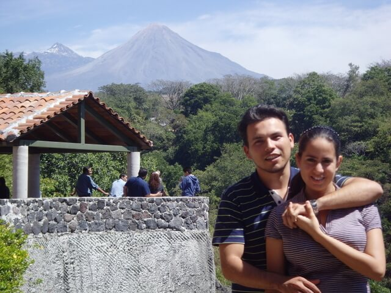
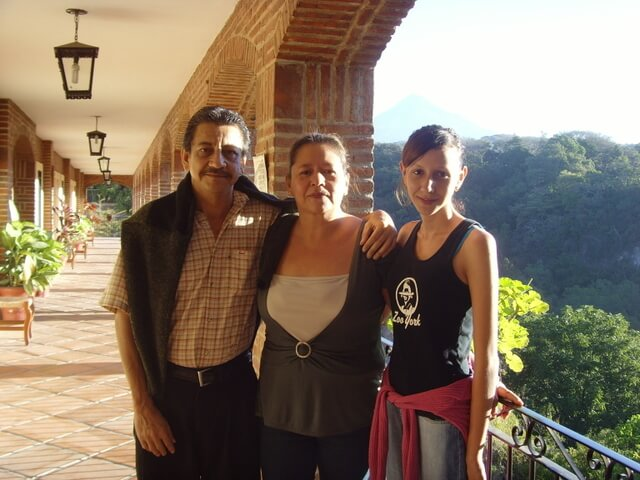
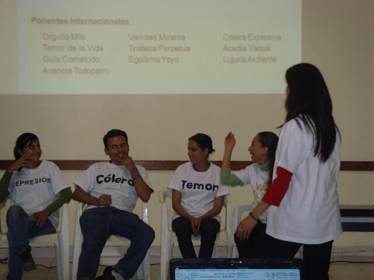
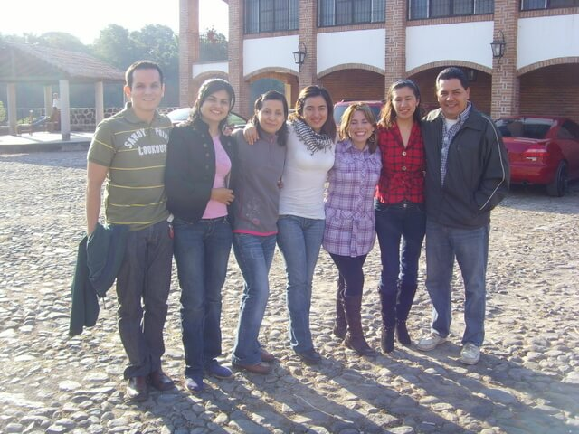
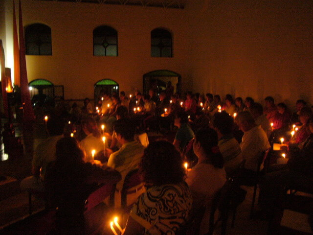
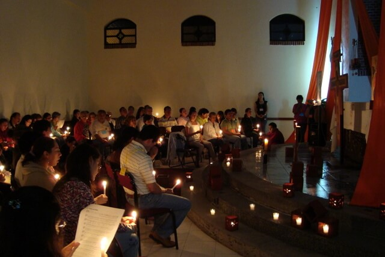

La Parroquia de N.S. del Perpetuo Socorro invita

Pláticas
Durante el fin de semana se tienen pláticas presentando los temas, representaciones, pequeñas obras de teatro y momentos para compartir en pequeños grupos.

Oración común
El viernes y sábado por la noche se hace una oración con cantos de Taizé. El viernes se reza en torno al icono de la cruz. El sábado por la noche una oración que celebra la luz de Cristo Resucitado.

Eucaristía y Sacramentos
Es posible para aquellos que deseen de acercarse al sacramento de la Reconciliación. El domingo se celebra la Eucaristía.
"Que el Señor bendiga estos trabajos y nos ayude a responder a la misión que la Iglesia nos ha confiado.
¡Bienvenidos!"
Pbro. Eduardo Vázquez Tiscareño
Párroco, Diócesis de Colima

- 
- 
- 
- 
- 
- 
La Iglesia es "como un laboratorio espiritual, donde se preparan los medicamentos a fin de que encontremos con qué sanar las heridas que nos ha hecho el mundo"
- San Juan Crisóstomo
siglo IV, Obispo de Constantinopla
Recibe noticias en tu email
Contenido

Basado en el libro "Terapéutica de las Enfermedades Espirituales" del ortodoxo francés Jean-Claude Larchet.
- Salud primordial del hombre y el origen de las enfermedades
- Patología del hombre caído:
- Facultad de Conocimiento
- Deseo y Goce
- Agresividad
- Libertad
- Memoria
- Imaginación
- Sentidos
- Funciones corporales
- Nosología de las pasiones y su transmisión en la humanidad caída
- Filautia
- Gula
- Lujuria
- Avaricia y Codicia
- Tristeza y Acedia
- Cólera
- Temor
- Vanagloria y Orgulla
- Cristo Médico
- Terapéuticas sacramentales (Bautismo, Confirmación, Penitencia, Eucaristía, Unción de los enfermos
- Condiciones subjetivas de la curación: voluntad de sanar, fe, arrepentimiento, oración, mandamientos y esperanza
- La conversión interior
- El doble movimiento de la praxis
- Virtudes genéricas: templanza, fortaleza y prudencia
- El rol del padre espiritual, la manifestación de los pensamientos y el combate contra los pensamientos
- Ascesis corporal
- Terapéutica de las pasiones (gula, lujuria, avaricia...)
- Salud reencontrada: la impasibilidad, la caridad y el conocimiento de Dios
"Estoy en comunión con ustedes y encomiendo a Dios sus actividades"
Mons. José Luis Amezcua Melgoza
X Obispo, Diócesis de Colima

Preguntas frecuentes
¿Quién organiza?
Un grupo de aproximadamente 15 personas, principalmente jóvenes, que se reúnen los viernes en la noche para hacer oración en la Parroquia de Nuestra Señora del Perpetuo Socorro, en Colima, México, bajo la dirección del párroco y con permiso del Obispo.
Apoyan también sacerdotes de la Diócesis de Colima.
¿Cuánto dura el retiro?
Se inicia el viernes a las 4 PM y se termina el domingo a las 4 PM.
¿Cuál es el costo?
La contribución personal es de 750 a 950 pesos según las posibilidades de cada quien. A partir de 750 usted ayuda a que asistan personas con menos recursos económicos.
Con esto se cubre hospedaje por persona en habitación doble (2 camas individuales) con baño, los alimentos de la cena del viernes a la comida del domingo.
¿Tendré que hablar en público?
No. El retiro es un curso informativo en el que no hay terapias ni personales ni de grupo. Sin embargo, las personas que espontáneamente deseen hacer preguntas o compartir algo breve lo pueden hacer.
¿A quién va dirigido?
Para todas las personas mayores de 18 años que les interese reflexionar sobre la salud interior. Han ido también adolescentes acompañados de sus padres. Los jóvenes a partir de 13 años son bienvenidos, sólo es necesario que vayan acompañados de algún familiar adulto, de preferencia sus padres.
¿Dónde es?
En la Casa de Espiritualidad de San José, en Suchitlán, Colima, México.
¿Qué debo llevar?
- Sábana
- Funda de almohada
- Toalla
- Artículos de higiene personal (jabón, shampoo)
- Un abrigo ligero (en las noches puede hacer frío)
En los cuartos hay dos camas individuales con almohada y cobija y un baño privado.
¿Qué buscamos?
Una oportunidad para:
- Despertar al misterio de Dios
- Solidarizarse con el sufrimiento humano
- Celebrar las fuentes de la fe
¿Este retiro forma parte de algún movimiento?
No. El retiro lo organiza un grupo de oracion parroquial. Participan personas que ya participan en algún movimiento de la Iglesia y quienes buscan simplemente una curación interior. El participante no se integra a un grupo. No buscamos dirigir a las personas a una sola iniciativa de la Iglesia. Al terminar se invita a que las personas busquen a su párroco y encuentren en la Iglesia un lugar para "sanar las heridas que nos ha hecho el mundo" y para ser fermento de comunión...
¿Cuándo fue el primer retiro?
El primer retiro se realizó del 10 al 12 de octubre del 2008. Participaron 93 personas. En esa fecha conmemoramos un año de la participación de 8 muchachos del grupo en un encuntro latinoamericano de jóvenes en Cochabamba, Bolivia, organizado por la comunidad de Taizé. Se han hecho, desde entonces, 19 retiros con la participación de más de 700 personas.
"Si para algunos, la oración en soledad es ardua, la belleza de una oración cantada en común, incluso entre dos o tres, es un incomparable apoyo de la vida interior. A través de palabras sencillas, cantos largamente repetidos, puede irradiar un gozo."
- fr. Roger de Taizé